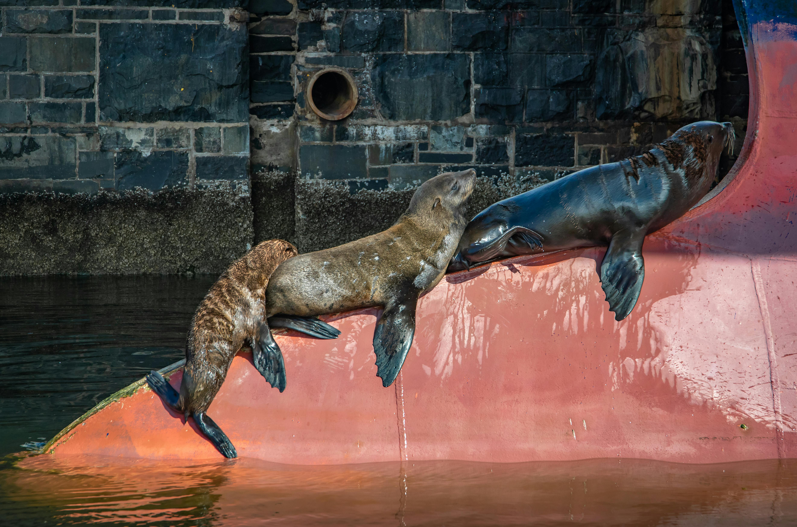
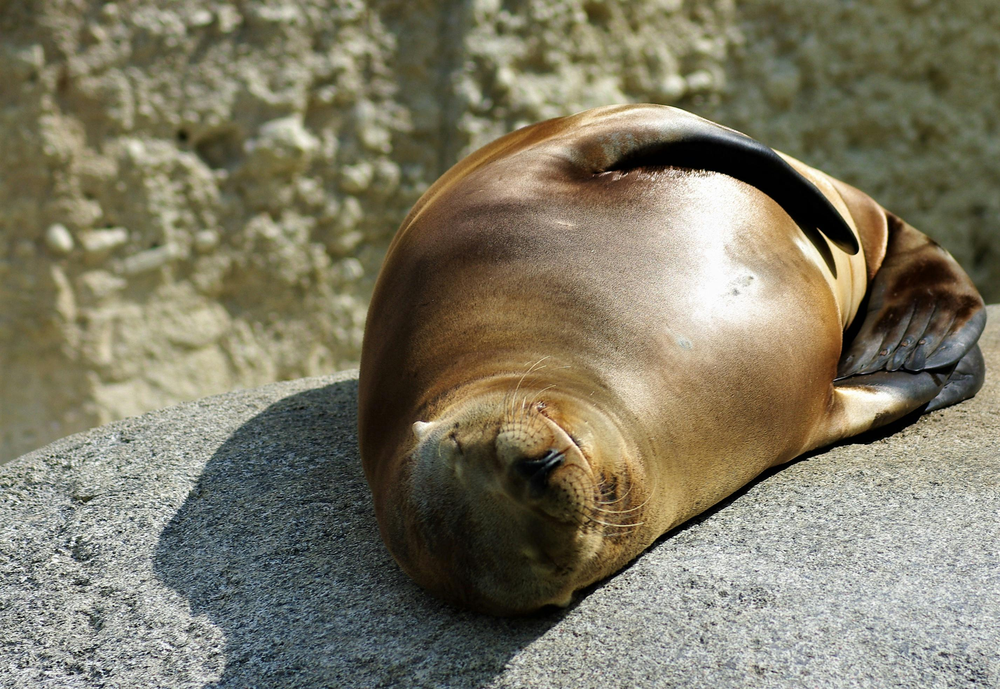
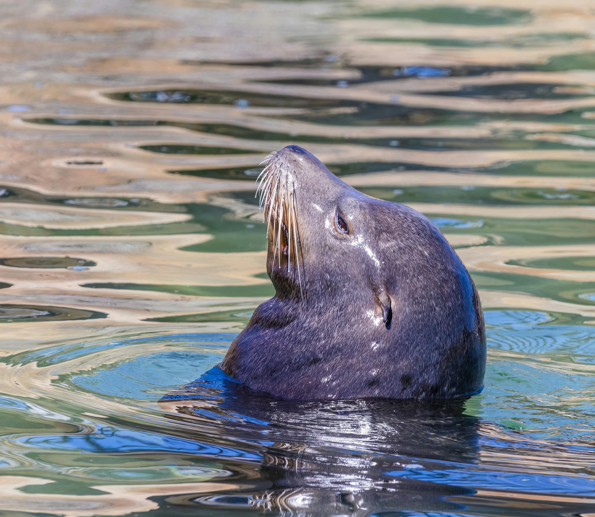
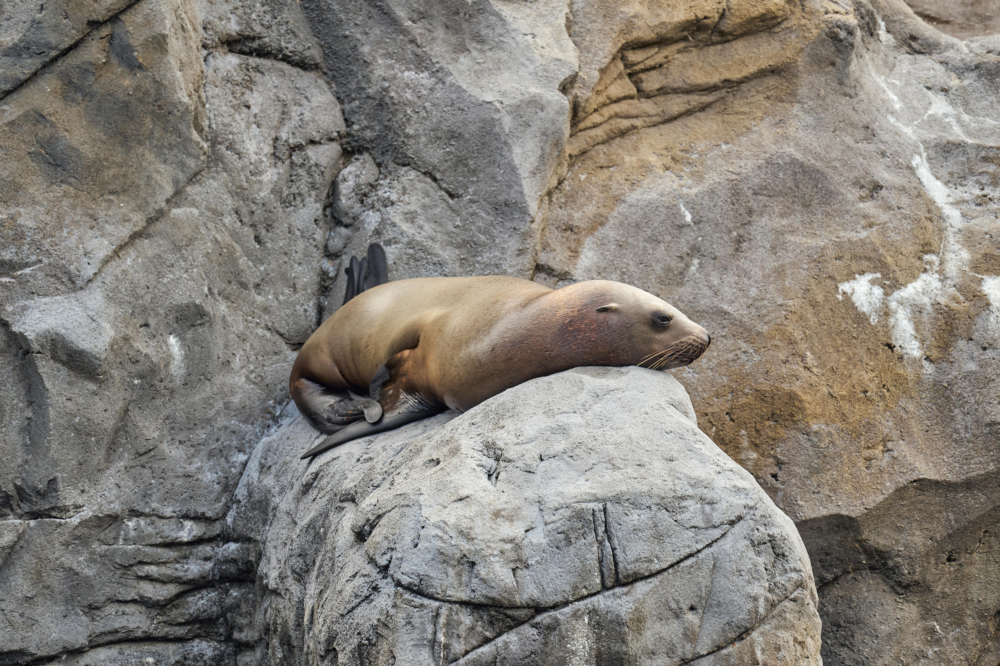
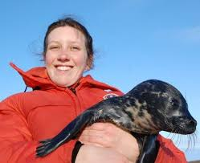
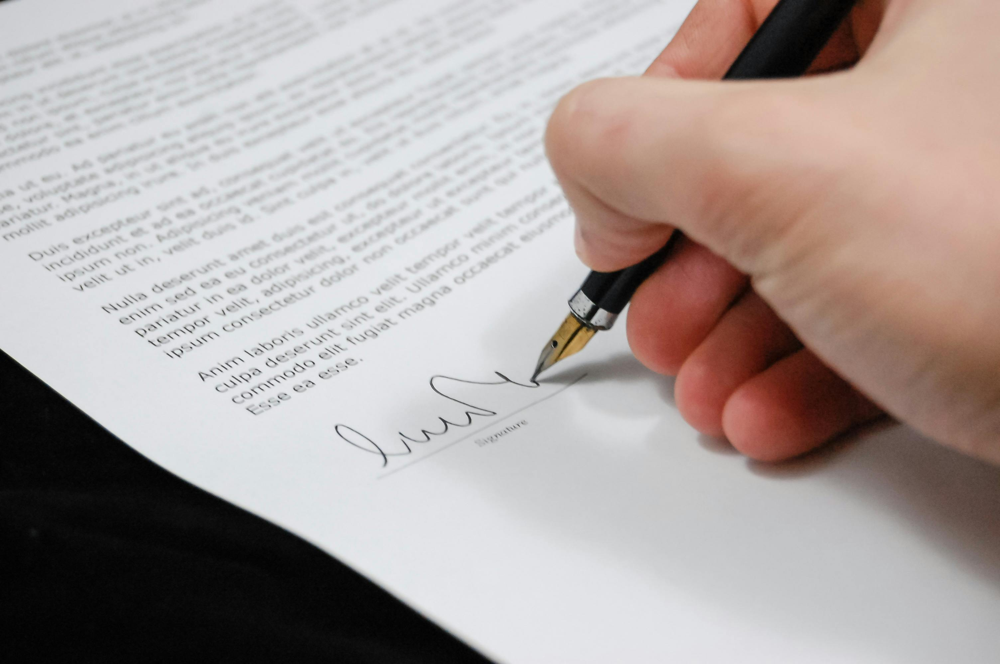

O našich zvířatech
V naší péči jsou momentálně tři lachtani, kteří si užívají klidné dny u vody. Rádi se sluní na kamenech, hrají si mezi sebou a objevují každý kout svého prostoru. Jejich zvědavost a hravost přináší každému návštěvníkovi radost a připomíná, jak důležité je chránit jejich přirozené prostředí.

Luna
Luna je zachráněný lachtan před pytláky momentálně je v naší péči

Hugo
Hugo je u nás v péči už od narození, Hugo byl odcizen od sve matky, pokusi o navracení do divočiny byly marne ,protože se vždy vratil zpátky

Chris
Chris se našel se sítí obmotaný okolo jeho těna řezalo ho do ploutví a těžko se mu dýchalo, hned jsme začali záchranou akci

Elena Marešová
Společnost Lachtan s.r.o. byla založena v roce 2019 vývojářkou Elenou Marešovou, která spojila moderní technologie s ochranou mořského života. Jejím snem bylo využít inovace k ochraně přírody – konkrétně k záchraně lachtanů, kteří se stále častěji potýkají s dopady lidské činnosti a znečištěním oceánů.
Pod jejím vedením vyvíjí společnost chytré systémy pro sledování mořských savců, monitorování kvality vody a digitální evidenci záchranných operací.
naše dosažene cíle
Díky těmto krokům jsme mohli dosáhnout řady významných cílů. Od roku 2018 jsme zachránili přes 1 200 lachtanů, z nichž většina se úspěšně vrátila do moře. Naše záchranná stanice dnes funguje nepřetržitě — 24 hodin denně, 7 dní v týdnu — a umožňuje rychlé reakce na každé hlášení o poraněném nebo vyplaveném zvířeti. Založili jsme také tři pobřežní stanoviště, která zajišťují první pomoc a převoz zvířat do našeho hlavního centra.